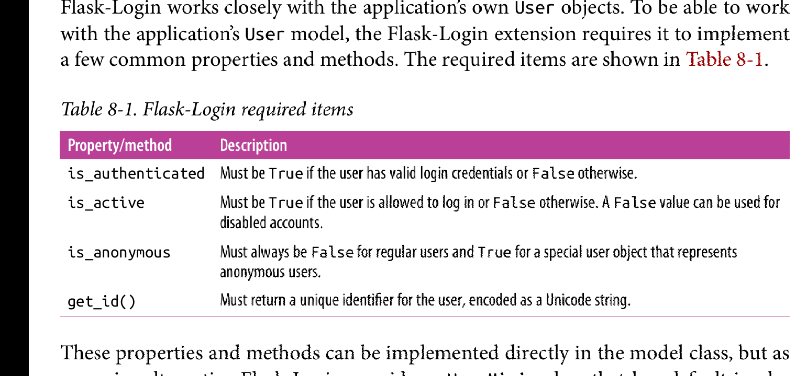

Chapter 8: User Authentication
Overview
大多数应用需要知道它们的用户是谁。当用户连接应用时，他们被应用验证，该过程使得应用知道用户的身份。一旦应用知道它们的用户是谁，它可以给相应用户个性化服务。
大多数的验证方法要求用户提供一段验证信息，该信息要么是邮件地址或者是用户名，以及一个密码。本章，将完成一个验证系统。
Authentication Extensions for Flask
Preview
有很多优秀的python验证库，但是没有一个可以完成所有的任务。本章使用的验证方案使用多个库，并为它们能协作工作提供了粘结代码。以下是使用到的库:
- Flask-Login: 管理已经登陆的用户的会话(session)信息。
- Werkzeug: 密码hashing和验证。
- itsdangerous: 以密码的方式保护验证令牌的产生和验证。
除了验证相关的库以外，也使用通常的扩展:
- Flask-Mail: 发送加密过的邮件。
- Flask-Bootstrap: html 模版。
- Flask-WTF: 网页表单。
Password Security
在网站设计中，存储在数据库中的用户信息的安全经常被开发者忽视。如果攻击者攻破了你的服务器并且可以访问你的用户数据库，那么你的用户将暴露在危险中--这种危险比你认为的还要严重。大多数的用户在多个网站使用相同的密码，这是已知的事实，因此即使你没有存储任何敏感的数据，通过访问你数据库上存储的密码，攻击者可以访问你的用户在其他网站上的账户。
安全的将用户密码存储在数据库的关键是，不存储密码本身，而是密码的哈希形式。一个密码哈希函数接受一个密码作为输入，向密码添加一个随机组件(salt).然后向它施加多个单向加密转换。该过程的结果是一个新的字符序列，该序列和原密码没有任何相似性，而且现今没有已知的方法将该序列转换成原密码。可以用验证密码哈希来取代验证原密码，这是因为哈希函数具有重复性：给定相同的输入(密码和salt),则结果总是相同的。
Hashing Password With WerkZeug
Werkzeug 的security模块实现了安全密码哈希。通过以下两个函数来实现，各自分别用在注册和验证阶段。
-
generate_password_hash(password, method='pbkd:sha256', salt_length=8)
method和salt_length适用与绝大多数情况。 -
check_password_hash(hash, password)
返回值为True or False
以下是对User模型的改变，以添加密码哈希功能:
from werkzeug.security import generate_password_hash, check_password_hash
class User(db.Model):
#...
password_hash = db.Column(db.String(128))
@property
def password(self):
raise AttributeError('password is not a readable attribute')
@password.setter
def password(self, password):
self.password_hash = generate_password_hash(password)
def verify_password(self, password):
return check_password_hash(self.password_hash, password)
密码哈希函数通过只读属性password来实现。当这个属性被设置时，setter方法将会调用werkzeug的generate_password_hash()函数， 并且将结果写入password_hash字段里。尝试读取password属性将会返回一个错误，很明显原密码一旦哈希就不能再被二次赋值。
check_password_hash()函数返回True意味着被验证的密码是正确的。
完成的密码哈希功能可以在shell中测试:
(venv) $ flask shell
>>>> u = User()
>>>> u.password = 'cat'
>>>> u.password
Trackback (most recent call last):
....
AttributeError: password is not readable attribute
>>>> u.password_hash
'pbk.....dfd'
>>>> u.verify_password('cat')
True
>>>> u.verify_password('dog')
False
>>>> u2 = User()
>>>> u2.password = 'cat'
>>>> u2.password_hash
'pbk...dff'
注意尝试访问一个用户的password属性将返回AttributeError.并且u和u2即使拥有相同的password值，他们的password_hash也仍旧不一样。可以将上述测试添加到tests文件夹中以支持单元测试。以下是添加的单元测试：
# tests/test_user_model.py: password hashing tests
import unittest
from app.models import User
class UserModelTestCase(unittest.TestCase):
def test_password_setter(self):
u = User(password = 'cat')
self.assertTrue(u.password_hash is not None)
def test_no_password_getter(self):
u = User(password = 'cat')
with self.assertRaises(AttributeError):
u.password
def test_password_verification(self):
u = User(password = 'cat')
self.assertTrue(u.verify_password('cat'))
self.assertFalse(u.verify_password('dog'))
def test_password_salts_are_random(self):
u = User(password = 'cat')
u2 = User(password = 'cat')
self.assertTrue(u.password_hash != u2.password_hash)
可以使用如下命令来运行新单元测试:
flask test如果想确定一切都按照既定运行，可以运行单元测试套件来检查。单元测试应该经常测试，以免该密码哈希的功能不会在将来被打破。
Creating An Authentication Blueprint
蓝图在第七章引入的，是在将application的创建移动到一个工厂函数后，是一种在全局作用域中定义路由的方式。在本节中，与用户验证子系统相关的路由将被添加到第二个蓝图auth中。对应用程序的不同子系统使用不同的蓝图是保持代码良好组织的好方法。
auth蓝图将被相同名字的python包所持有。以下代码是蓝图包的构造器创建了一个蓝图对象，并且view.py中导入路由：
from flask import Blueprint
auth = Blueprint('auth', __name__)
from .import views
以下是与auth蓝图相关的路由函数定义:
# app/auth/views.py: authentication blueprint routes and view functions
from flask import render_template
from . import auth
@auth.route('/login')
def login():
return render_template('auth/login.html')
注意这里render_template()函数的模板文件参数，其是存储在auth文件夹下，而auth是在app/templates/文件夹下的，因为flask规定模板文件的路径与应用程序的templates文件夹路径是相关的。通过将auth的模板文件存储在其相应的子文件夹下，这避免了和main蓝图的命名冲突的风险，甚至是和将来要加入进来的新蓝图。
注意，蓝图也可以经过配置来拥有自己独立的模板文件夹。当应用程序配置了多个模板文件夹时，render_temlate()函数首先搜索应用程序定义的模板文件夹，其次搜索由蓝图定义的模板文件夹。
auth蓝图需要在create_app()工厂函数中安装到应用程序中。以下是代码:
# app/__init__.py: authentication blueprint registration def create_app(config_name): #.. from .auth import auth as auth_blueprint app.register_blueprint(auth_blueprint, url_prefix='/auth') return app
在蓝图注册中的url_prefix选项是可选的。一旦使用，所有定义在该蓝图下的路由都会以给定url前缀被注册。比如，/login路由将会被注册成/auth/login, 在开发服务器上的完全url是； http://localhost:5000/auth/login
User Authentication with Flask-Login
当用户登陆进应用程序时，他们的验证状态需要被记录到用户回话中，因此当他们在不同页面之间导航时，这些验证信息是共享的。Flask_Login是一个小型但是极度有用的扩展库，它专注于管理用户验证系统中的该特定方面，而应用程序不用去使用一个庞大的用户验证机制。
Preparing the User Model for logins
Flask-Login工作与应用程序自己的User模型紧密相连。为了能和应用程序的User模型一起工作， Flask-Login要求User模型必须实现一些通用的属性和方法。以下是要求元素的图片:

这些属性和方法可以直接在模型类中实现，但是处于方便考虑，flask-login提供了一个UserMixin类，该类包含了上述要求的默认实现，其适用于绝大多数情况。以下是更新后的User模型：
# app/models.py: updates to the User model to support user logins
from flask_login import UserMixin
class User(UserMixin, db.Model):
__tablename__ = 'users'
id = db.Column(db.Integer, primary_key = True)
email = db.Column(db.String(64), unique=True, index=True)
username = db.Column(db.String(64), unique=True, index=True)
password_hash = db.Column(db.String(128))
role_id = db.Column(db.Integer, db.ForeignKey('roles.id'))
注意此时email字段被添加。在该程序中，用户将以其邮箱地址注册， 因为相比用户名，邮箱地址不容易忘记。
以下是flask-login在工厂函数中初始化的代码:
# app/__init__.py: Flask-Login initialazation from flask_login import LoginManager login_manager = LoginManager() login_manager.login_view = 'auth.login' def create_app(config_name): #... login_manager.init_app(app) #...
LoginManager对象的login_view属性设置了登陆页面的路由函数名。Flask_login将会将一个试图访问被保护页面的匿名用户重定向到登陆页面。因为该登陆路由是在一个蓝图中定义，所以endpoint名字需要施加特定蓝图名前缀。
最后，flask_login需要应用程序指定一个函数来被调用，当flask_login扩展需要以制定用户标示符来从数据库中加载指定用户时，该函数会被自动调用。以下是自动加载用户数据的函数:
# app/models.py: user loader function from . import login_manager @login_manager.user_loader def load_user(user_id): return User.query.get(int(user_id))
flask_login使用login_manager.user_loader装饰器来注册函数，该函数会在flask_login需要获取特定以登陆用户的信息时被调用。用户标示符以字符串的形式被传递给函数，因此在函数将它传递给加载用户数据的sqlalchemy query时，其会被转换成integer.该函数的返回值必须是一个用户对象，或者为None，如果用户标示符无效或者发生其他错误。
Protecting Routes
为了保护一个路由，并限定其只能被已通过验证的用户访问，flask_login提供了一个login_required装饰器。以下是其用例:
# usage of login_required decoreator
from flask_login import login_required
@app.route('/secret')
@login_required
def secret():
return 'Only authenticated users are allowed!'
从上述例子中，可以看出装饰器可以被链式调用。当两个以上装饰器被添加到一个函数上时，每一个装饰器除了会影响目标函数以外，还会影响其声明位置之下的所有东西。在本例中，secret()函数将会使用login_requierd装饰器来防止未验证用户访问，然后被login_required影响而产生的结果函数将会在flask中注册成一个route。反转装饰器之间的顺序会造成错误的结果，因为原函数在接收由login_required装饰器制定的属性之前，其会被注册成一个路由函数。
多亏了login_required装饰器，一旦该受保护路由被未验证用户访问，flask-login将会中断用户请求，转而将匿名用户重定向到登陆页面。
Adding a Logging Form
以下是登陆页面的登陆表格:
# app/auth/forms.py : login form
from flask_wtf import FlaskForm
from wtforms import StringField, PasswordField, BooleanField, SubmitField
from wtforms.validators import DataRequired, Length, Email
class LoginForm(FlaskForm):
email = StringField('Email', validators=[DataRequired(), Length(1, 64), Email()])
password = PasswordField('Password', validators=[DataRequired()])
remember_me = BooleanField('Keep me logged in')
submit = SubmitField('Log In')
Password类代表<input>元素，其类型是type="password". BooleanField代表一个单选框。
email字段使用多个验证器来确保用户不仅输入了数据，而且输入的数据有效合法。当提供多个验证器时，flask_wtf将会以验证器提供的顺序来对其求值，一旦某个验证器失败，那么错误信息将来源于首次失败的验证器中的第一个。
和登陆页面相关联的模板文件存储为tempaltes/auth/login.html，一下是登陆页面的图片：
在base.html中的导航条使用jinja2条件来显示Log in 或者Log Out链接，其取决于当前用户的登陆状态。以下是模板条件代码：
# app/templates/base.html: Log In and Log Out navigation bar links
<ul class="nav navbar-nav navbar-right">
{% if current_user.is_authenticated %}
<li> <a href="{{ url_for('auth.logout') }}">Log Out</a></li>
{% else %}
<li> <a href="{{ url_for('auth.login') }}">Log In</a></li>
{% endif %}
</ul>
在条件中使用的current_user变量由flask_login定义，并且自动对视图函数和模板有效。该变量包含了当前登陆的用户或者一个代理的匿名用户，如果该用户没有登陆的话。一个匿名对象的is_authenticated属性值为False,因此表达式current_user.is_authenticated是一个方便的方法去检测当前用户有没有登陆。
Signing Users In
以下是login()视图函数的实现代码:
# app/auth/views.py: login route
from flask import render_template, redirect, request, url_for, flash
from flask_login import login_user
from . import auth
from ..models import User
from .forms import LoginForm
@auth.route('/login', methods=["GET", "POST"])
def login():
form = LoginForm()
if form.validate_on_submite():
user = User.query.filter_by(email=form.email.data).first()
if user is not None and user.verify_password(form.password.data):
login_user(user, form.remember.data)
next = request.args.get('next')
if next is None or not next.startwith('/'):
next = url_for('main.index')
return rediret(next)
flash('Invalid username or password')
return render_template('auth/login.html', form=form)
该视图函数创建一个LoginForm对象，就像在第四章的简单表格一样使用它。当请求属于GET类型时，该视图函数只是渲染模板，而模板一次显示表格。当表格以POST请求被提交时，flask_wtf的validate_on_submit()函数验证表单变量，然后尝试让用户登陆。
为了让用户登陆，该函数先是使用表单提供的email字段来在数据库中尝试加载用户，如果拥有制定email的用户存在，则verify_password()函数将会验证表单提供的password字段。如果密码有效，则flask_login的login_user()函数被调用，用以在用户会话中记录当前用户为以登陆状态。login_user()函数允许用户登陆以及接受一个可选的参数remember_me布尔值。该参数为False时，一旦当前窗体被关闭，那么存储用户登陆状态的用户会话就会过期，因此用户下一次必须重新登陆。而True值造成一个长期的cookie存在与用户的浏览器中，而flask_login使用该cookie来恢复用户会话。可选的REMEMBER_COOKIE_DURATION配置选项可以被用来改变cookie默认的一年时间的存储时长。
根据第四章的Post/Redirect/Get模型，可知，一个提交登陆信息的POST请求，最终必须以重定向的响应来结束，但是这里有两种可能的目标URL。如果展示给用户的登陆表单是为了阻止匿名用户以未验证的方式来访问他们想要的网址，但是该URL是受保护的，那么flask-loginJ将会把该受保护的源网址存入名为next的查询字符串参数中，该参数可以通过request.args字典来访问。如果next查询字符串参数的值未定义，那么最终的重定向指向的是Home网址。并且next参数所代表的url会被验证是否是相对url,其目的是组织恶意用户使用该参数将信赖网站的用户重定向到另一个网站。
如果用户键入的邮箱地址或密码无效，那么程序将会设置flash信息，并重新渲染登陆表单以为让用户retry.
以下是可以渲染登陆表单的登陆模版的代码:
# app/templates/auth/login.html: login form template
{% extends "base.html" %"
{% import "bootstrap/wtf.html" as wtf %}
{% block title %} Flasky - Login{% endblock %}
{% block content %}
<div class="page-header">
<h1>Login</h1>
</div>
<div class="col-md-4">
{{ wtf.quick_form(form) }}
</div>
{% end block %}
Signing User Out
以下是用户登出的代码:
# app/auth/views.py: logout route
from flask_login import logout_user, login_required
@auth.route('/logout')
@login_required
def logout():
logout_user()
flash('You have been logged out.')
return redirect(url_for('main.index'))
为了让用户登出，flask_login的logout_user()函数被调用，用以移除并重置用户会话。
Understanding How Flask-Login Works
Flask-Login是一个相当小的扩展，但是由于它在验证流程中引入了看起来毫无关联的代码片段，这导致flask用户难以理解flask-login是怎么工作的。以下是当用户登陆时，所依次发生的操作:
- 用户点击Log In按钮后,会被导航到http://localhost:5000/auth/login网址，该网址的视图函数会返回一个登陆表单给用户。
-
用户键入他们的用户名以及密码后，点击提交按钮，相同的视图函数会被再次调用，但是这次是POST请求，而不是GET请求:
- 该验证器验证由表单提交上来的用户验证信息，然后调用flask-login的login_user()函数来实现用户登陆。
- login_user()函数将该用户的id以字符串的形式写入到用户会话中。
- login()视图函数结束，并返回一个指向home的重定向。
-
浏览器接收到重定向，并使用GET来请求包含在重定向中的网址:
- home page的视图函数被调用，并且main的jinja2模版被渲染。
- 在渲染jinja2模版期间，flask-login的current_user引用首次出现。
- 在本次请求中，current_user环境变量还没有被赋予任何值，因此它调用flask-login的内部函数_get_user()去找到这个用户是谁(我猜，这里的_get_user()函数使用user_loader装饰器指定的用户函数，并将之前login_user()写入用户会话中的用户id作为参数传给装饰器定义的函数，该函数将查询到的用户信息赋值给current_user环境变量)。
- _get_user()函数检测是否有一个用户id存储在用户会话中(该id是通过login_user()函数写入)。如果该id不存在，它返回一个flask-login的AnonymousUser类的实例。如果该id存在，则其以此id作为参数，调用user_loader装饰器定义的函数。
- user_loader所定义的函数从数据库中读取相应用户并返回它。flask-login将该用户赋值给只适用于当前请求的current_user环境变量。
- 模版接收current_user环境变量最新的值。
login_required装饰器是构建在current_user环境变量之上的，只用当current_user.is_authenticated表达式为True时，被装饰的视图函数才准许被激活。logout_user()函数只是简单地将用户id从会话中删除。
Testing Logins
为了验证登陆功能有效性，home page被更新来通过用户名字来欢迎用户。以下是产生欢迎的代码:
# app/templates/index.html: greeting the logged-in user
Hello,
{% if current_user.is_authenticated %}
{{ current_user.username }}
{% else %}
Stranger
{% endif %}!
在这个例子中，current_user.is_authenticated同样被用于决定一个用户是否登陆。
因为用户注册功能还没有被创建，一个新用户现在只能通过shell来注册。
(venv) $ flask shell >>> u = User(email='john@example.com', username='john', password='cat') >>> db.session.add(u) >>> db.session.commit()
现在新创建的用户可以登陆了，以下是截图:
New User Registration
当用户想成为一个网站的成员时，他们必须注册，从而他们被网站所知，并且可以登陆。一个在登陆界面的链接将匿名用户带到注册界面，在这里他们可以填写他们的所需信息。
Adding A User Registration Form
在注册界面中使用到的表单要求用户键入邮箱地址，用户名以及密码。以下是表单的代码:
# app/auth/forms.py: user registration form
from flask_wtf import FlaskForm
from wtforms import StringField, PasswordField, BooleanField, SubmitField
from wtforms.validators import DataRequired, Length, Email, Regexp, EqualTo
from wtforms import ValidationError
from ..models import User
class RegistrationForm(FlaskForm):
email = StringField('Email', validators=[DataRequired(), Length(1, 64), Email()])
username = StringField('Username', validators=[DataRequired(), Length(1, 64), Regexp('^[A-Za-z][A-Za-z0-9_.]*$', 0, 'Username must have only letters, numbers, dots or underscores')])
password = PasswordField('Password', validators=[DataRequired(), EqualTo('password2', message='Passwords must match.')])
password2 = PasswordField('Confirm password', validators=[DataRequired()])
submit = SubmitField('Register')
def validate_email(self, field):
if User.query.filter_by(email=field.data).first():
raise ValidationError('Email already in use.')
def validate_username(self, field):
if User.query.filter_by(username=field.data).first():
raise ValidationError('Username already in use.')
该表单使用Regexp验证器来确定username字段以一个字母开头，并且只包含字母，数字，下划线以及点号。该验证器的第二个和第三个参数分别代表正则表达式flag以及失败时显示的消息。
处于安全考虑，密码被键入两次，但是该步骤必须验证两次输入的密码必须相同，而这是通过wtforms的EqualTo验证器来实现的，该验证器将自身添加到其中一个密码上，而将另一个密码作为其参数。
该表单有两个以方法形式存在的自定义的验证器，当一个表单定义了一个以前缀validate_，后随一个字段的名字时，那么该方法会像任何预定义的验证器一样被用户调用。在本例中，email和username的自定义验证器保证其值在数据库中的唯一性。该验证器通过抛出一个以错误信息文本为参数的ValidationErro对象来表示验证错误。
该注册表单的模板代码存在于/templates/auth/registration.html，以下是注册表单:
注册链接需要出现在登陆界面中，这样没有账户的用户可以轻易地找到它。以下是修改后的登陆表单模板:
# app/templates/auth/login.html: link to the registration page
<p>
New user?
<a href="{{ url_for('auth.register') }}">
Click here to register.
</a>
</p>
Registering New Users
以下是处理注册表单的视图函数:
# app/auth/views.py: user registration route
@auth.route('/register', methods=['GET', 'POST'])
def register():
form = RegistrationForm()
if form.validate_on_submit():
user = User(email=form.email.data,
username=form.username.data,
password=form.password.data)
db.session.add(user)
db.session.commit()
flash('You can now login.')
return redirect(url_for('auth.login'))
return render_template('auth/register.html', form=form)
Account Confirmation
对于当下的应用程序来说，验证用户提供的注册信息的有效性是很重要的。这通常要求可以通过提供的邮件地址来联系到用户。
为了验证邮箱地址的有效性，一旦用户完成注册，程序就发送确认邮件给用户。新注册的用户账户默认是未确认的(unconfirmed),一旦用户完成邮件中最终的确认指令，该账户就被标记成confirmed。用户账户确认，这个过程通常涉及到点击一个包含了确认令牌的精心制作的链接地址。
Generating Confirmation Tokens With Itsdangerous
最简单的用户账户确认链接可以是在确认邮件里包含一个类似于http://www.example.com/auth/confirm/<id>的地址，其中<id>是数据库中user的数字形式的主键值。当用户点击该链接，用于处理该路由的视图函数将接受到的要被确认的用户id视为参数，这将很容易地更新一个用户的confirmed状态。
很明显，这很不安全，任何搞清楚了确认链接地址格式的用户可以confirm任意的用户账户，而这仅仅通过发送包含有随机数序列的confirm地址就可以办到。一种安全的方式可以是，用一个包含了相同信息的令牌(token)来取代URL中的<id>，但是这个包含了令牌的confirm链接只有服务器才有能力生成。
回忆chapter 4中用户会话的知识可知，flask使用加密签名过的cookie来保护用户会话的内容免受伪造的危险。该用户会话cookie包含了itsdangerous包生成的加密签名。如果用户会话的内容被篡改，加密签名就会和用户会话的内容不再匹配，因此分flask就会丢弃该会话并重新开始一个新的用户会话。而确认令牌也是使用一样的原理。
以下的shell会话展示了itsdangerous如何生成包含了用户id的加密签名过的令牌:
(venv) $ flask shell
>>> from itsdangerous import TimedJSONWebSignatureSerializer as Serializer
>>> s = Serializer(app.config['SECRET_KEY'], expires_in=3600)
>>> token = s.dumps({'confirm': 23})
>>> token
'dfdf....ddd'
>>> data = s.loads(token)
>>> data
{'confirm': 23}
itsdangerous包提供了多种类型的令牌生成器，其中类TimedJSONWebSignatureSerializer生成带有时间限制的JSON Web Signatures(JWSs)。该类构造器接受一个加密键作为参数，该参数可以是flask中的SECRET KEY.
dumps()方法首先对提供的SECRET_KEY产生加密过的签名，然后将需要加密的用户数据结合前面的加密签名一同序列化成最终的字符串形式的令牌。Serializer()构造器中的expires_in参数指定令牌的有效时间，其单位是秒。
为了对令牌进行解码，serializer对象提供了loads()方法，该方法只接受一个令牌参数。该方法验证签名(SECRET_KEY)和有效时间，如果两者都有效，其返回原始未被加密的用户数据。
令牌的产生和验证可以集成到User模型中。以下是代码:
# app/models.py: user account confirmation
from itsdangerous import TimedJSONWebSignatureSerializer as Serializer
from flask import current_app
from . import db
class User(UserMixin, db.Model):
#...
confirmed = db.Column(db.Boolean, default=False)
def generate_confirmation_token(self, expiration=3600):
s = Serializer(current_app.config['SECRET_KEY'], expiration)
return s.dumps({'confirm': self.id}).decode('utf-8') # 注意是解码令牌
def confirm(self, token):
s = Serializer(current_app.config['SECRET_KEY']) #注意这里的Serializer构造器未使用expire_in参数，也可以使用
try:
data = s.loads(token.encode('utf-8')) # 注意这里是对令牌进行编码
except:
return False
if data.get('confirm') != self.id:
return False
self.confirmed = True
db.session.add(self)
return True
generate_confirmation_token()方法生成一个带有一个默认时间为一小时的令牌。confirm()方法验证令牌，如果其有效，就设置用户模型中的confirmed字段为True.
除了验证令牌以外，confirm()方法还检测已登陆用户是否与保存在令牌中的id匹配，该已登陆用户存储在current_user环境变量中。该函数用于确认一个特定用户的令牌不能用来confirm其他的用户。
将两个方法加入到单元测试中。
Sending Confirmation Emails
当前/register路由在将用户添加到数据库中之后将用户重定向到/index。在重定向之前，该路由需要发送确认邮件。以下是改变后的代码:
# app/auth/views.py: registration route with confirmation email
from ..email import send_email
@auth.route('/register', methods=['POST', 'GET'])
def register():
form = RegistrationForm()
if form.validate_on_submit():
#...
db.session.add(user)
db.session.commit()
token = user.generate_confirmation_token()
send_email(user.email, 'Confirmation Your Account', 'auth/email/confirm', user=user, token=token)
flash('A confirmation email has been sent to you by email.')
return redirect(url_for('main.index'))
return render_template('auth/register.html', form=form)
注意在发送确认邮件之前，程序使用db.commit()了。重点是生成令牌需要使用到用户的id，而该id只有在用户添加到数据库之后才才会有初始值。
为了分离html文件和验证蓝图要用到的邮件模版，程序将该邮件模版存储在templates/auth/email文件夹。在chapter 6讨论过，邮件body需要普通文本版本和html版本的两个文件。以下是confirmation email template的普通文本版本:
# APP/templates/auth/email/confirm.txt: text body of confirmation email
Dear {{ user.username }}
Welcome to Flasky!
To confirm your account, please click on the following link:
{{ url_for('auth.confirm', token=token, _external=True) }}
Sincerely,
The Flasky Team
Note: replies to this email address are not monitored.
url_for()函数默认生成相对路径，例如，url_for('auth.confirm', token='abc')返回/auth/confirm/abc,该相对路径很显然不能用在邮件中。相对路径适用于在网页中。而浏览器默认将向相对地址添加主机名和端口号来生成绝对地址。然而在发送邮件上是没有这个环境的。url_for()中的_external参数要求返回添加了网络传输协议，主机名，端口号的完全地址。
以下是confirm account的代码:
# app/auth/views.py: confirm a user account
from flask_login import current_user
@auth.route('/confirm/<token>)
@login_required
def confirm(token):
if current_user.confirmed:
return redirect(url_for('mail.index'))
if current_user.confirm(token):
db.session.commit() # in user.confirm(),it alter the user.confirmed field after it run correctly with db.add() run
flash('You have confirmed your account. Thanks!')
else:
flash('The confirmation link is invalid or has expired.')
return redirect(url_for('mail.index'))
该路由受login_required装饰器保护，当注册后的用户点击confirmation 邮件中的该地址，其会自动登陆(用户会话中保存已登陆用户的信息).
该函数首先检测该以登陆用户是否已confirmed，如果已经confirmed，则重定向到home,结果是什么都不做。这可以避免用户失误导致多次点击confirm 邮件时所做的不必要工作。
因为整个token confirmation 任务是在User模型中完成的，而该视图函数只需要执行db.confirm()以及根据结果flash相应信息即可。当confirm成功,User模型的confirmed字段被修改成True,且其执行db.add(),而后该视图函数执行db.commit()。
每一个应用都可以决定一个未验证用户具有什么权限，可以做什么。一种可能是，只准许未验证用户登陆应用，并且展示一个要求立即confirm account才能进一步使用app的页面。
上述的要求可以使用before_request钩子来实现。但是该钩子在蓝图中只能应用到属于该蓝图的请求上。如果蓝图钩子要安装应用到app所有的请求上，可以使用before_app_request装饰器。以下是实现:
# app/auth/views.py: filtering unconfirmed account with the before_app_request handler
@auth.before_app_request
def before_request():
if current_user.is_authenticated \
and not current_user.confirmed \
and request.blueprint != 'auth' \
and request.endpoint != 'static':
return redirect(url_for('auth.unconfirmed'))
@auth.route('/unconfirmed')
def unconfirmed():
if current_user.is_anonymous or current_user.confirmed:
return redirect(url_for('mail.index'))
return render_template('auth/unconfirmed.html')
before_app_request handler会在下列三个满足时，中断用户的当前请求:
- 该用户已登陆(current_user.is_authenticated为True
- 当前用户的账户为confirm
- 当前用户请求的网址不属于验证蓝图中的网址以及属于请求资源文件的static路由。访问验证路由必须不受限制，这样用户才能执行账户confirm操作以及其他的账户管理功能。
如果上述三个条件全部满足，则当前用户的请求会被中断，然后被重定向到/auth/unconfirmed路由上，该路由展示一个提示用户立即confirm账户的页面。
注意，无论before_request还是before_app_request返回一个响应还是重定向，flask只会将该响应发送给客户端，而不会执行用户最初请求所关联的视图函数。这允许app在需要时通过回调来中断原始请求。
展示给未confirm用户的页面只是渲染一个模版，该模版要求用户立即confirm账户以及一个用于原验证email无效时可以用的再生成新confirm email的功能。
以下是重发confirm email的路由:
# app/auth/views.py: resending the account confirmation email
from ..email import send_email
@auth.route('/confirm')
@login_required
def resend_confirmation():
token = current_user.generate_confirmation_token()
send_email(current_user.email, 'Confirm Your Account', 'auth/email/confirm', user=current_user, token=token)
flash('A new confirmation email has been sent to you by email.')
return redirect(url_for('mail.index'))
该路由重复在注册阶段做的发送邮件的任务，目标用户有current_user环境变量表示。并且该路由使用login_required来保证访问该地址的用户处于已登陆状态。
Account Management
拥有账户的用户可能随时会改变账户信息。使用本章的技术，将以下任务添加进验证蓝图。- 密码更新
- 有安全意识的用户可能需要周期性地改变他们的密码。这是一个简单的功能，因为一旦用户登陆后，展示一个用新密码来取代旧密码的任务给用户就是安全的。该实现在github上。应用重构为使用下拉框包含Log Out和Change Password链接。
- 密码重置
- 为了避免用户因为遗忘密码而导致账户无法再使用，可以提供一个可选的密码重置功能。使用token来安全地密码重置。当用户要求密码重置时，用户会收到一封带有重置token的邮件。用户点击邮件中的链接，之后token被正确验证，一个可以键入新密码的页面被展示给用户。该功能同样在github上。
- 改变绑定的邮件地址
- 用户可以改变注册时使用的邮件地址，新邮件地址同样需要被confirm。用户通过在表单中键入新的邮箱地址来完成该功能。可以通过将带有token的邮件发送给用户来完成邮箱验证。当服务器接受到用户的反馈邮件时，它可以以此来更新用户对象。当服务器在等待接收token期间，它可以将新邮箱地址存储在新的数据库字段中，该字段服务于即将到来的邮件地址，或者他可以将地址和id一同从存储在token中。该功能同样在github中。
在下一章，应用将通过使用User模型来扩展用户子系统。